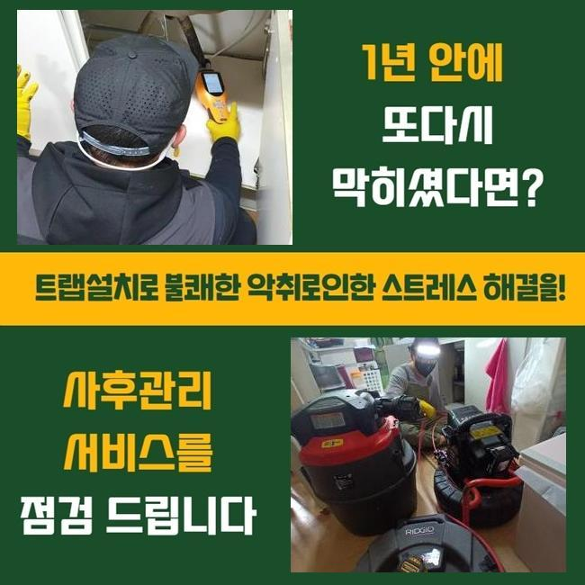
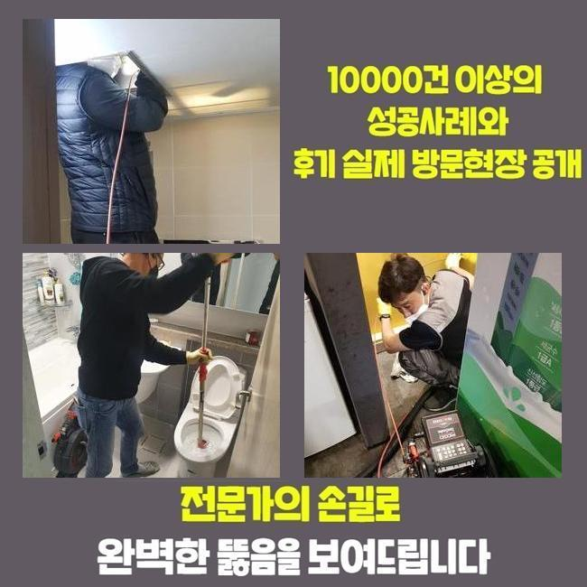
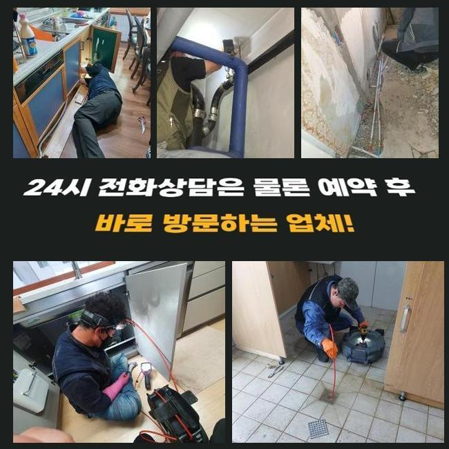
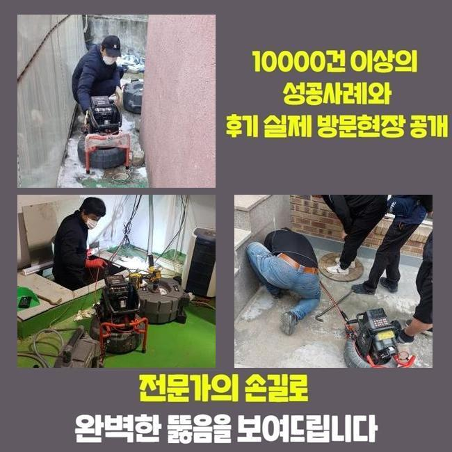
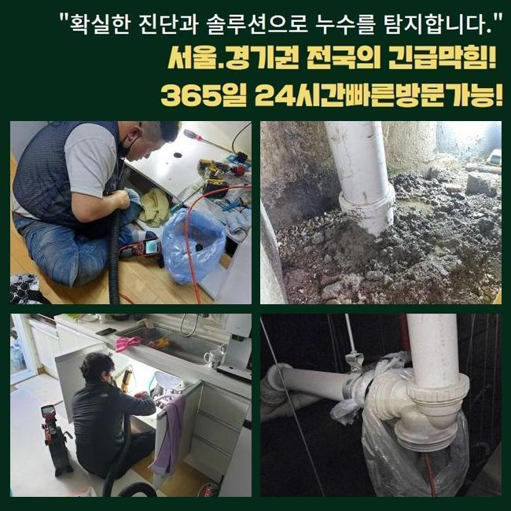
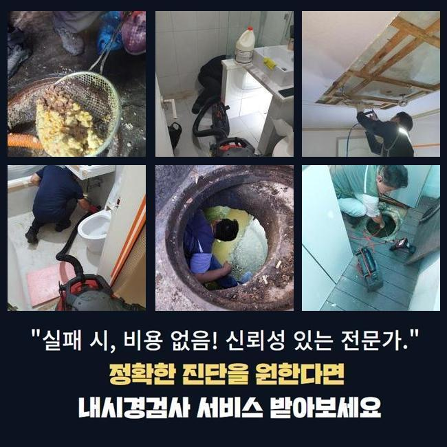
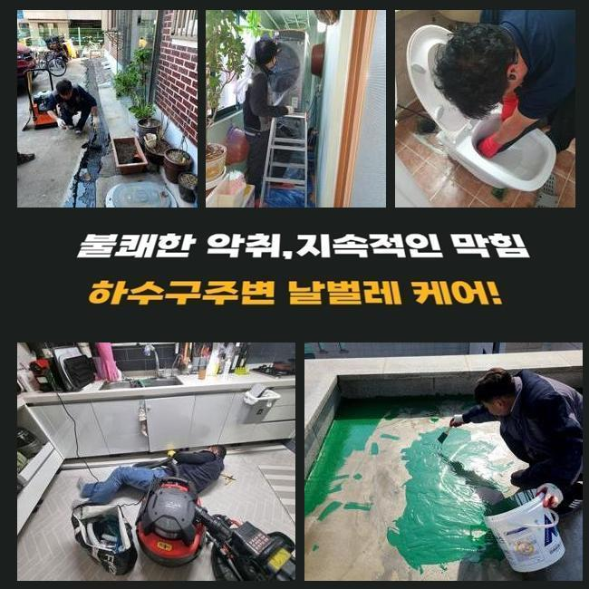

🏠 미추홀구 용현동씽크대막힘 문학동 배수구뚫기 물샘전문업체
용인 싱크대막힘 전문 시공 후기

📋 작업 개요
- 위치: 용인
- 서비스 유형: 싱크대막힘, 배관막힘, 누수수리, 역류해결, 뚫는업체, 배관청소, 고압세척, 설비공사, 악취차단
- 작업 일시: 2025. 2. 20. 0:28
- 업체명: 하수구수사대 (010-5615-2118)
🔍 문제 상황
미추홀구 용현동씽크대막힘 문학동 배수구뚫기 물샘전문업체
금번엔 구축아파트 관리사무실에서 우수배수관이 막혀버리는 바람에 빗물역류가 발발한다는 의뢰를 받게되었는데요
물기가 우수관쪽으로 흘러들어가지않고 도리어 역류가 발생하여 주위가 오손되었고 습한기운도 심해졌다고 설명하셨어요
2~3개월 이전에도 이와 동일한 현상을 목격한적이 있는데 장마철이 지난뒤 더욱 악화된거라고 말하셨답니다
이때문에 단지내에 냄새도 심해지고 입주민들의 불만도 점점 커지게 되었답니다
뚫음을 곧바로 진행해달라 요구하셨고 이에 저흰 지체없이 작업준비를 하기로 했어요
지도로 검색해보았더니 멀지않은 곳에 존재하는 곳이었답니다
고객님에게 바로 수리가능하다고 알려드린뒤 공구들을 확인하고 출발하였답니다
현장에 당도하니 아파트 관리사무소 바로옆에 우수설비가 있었죠
앞쪽으로 가보니 젖은 낙엽들이 많았고 겉에서 확인해 보았더니 이를 치우기위한 빗자루 등이 세팅돼 있었답니다
역류문제가 심화되면서 청소직원분이 상시로 그것들을 정리해나가셨다고 하십니다
그러나 문제는 개선이 안되어서 신속한 정비를 원하셨죠

🔎 원인 분석
💡 전문가 진단: 정밀 진단 장비를 사용하여 슬러지의 고착 여부를 판명하고 타격/세척 작업을 실시했습니다.
우수배관은 낮은위치로 빗물이 모이게 설계돼야 하겠으나 이곳은 주위와 비슷한 높이로 시설물 공사를 진행하여 역류증세가 늘어나게 된거였죠
이것들을 처리하려면 굴토과정을 거쳐야 마땅했지만 손님분에게서는 그 부분은 한달정도 뒤에 계획해보자고 하시면서 일단은 우수관 통수를 해달라 요청이야기하셨어요
우수배관의 막힘현상을 본격적으로 진단해보니 흙이나 낙엽들도 있었으나 물티슈와 같은 찌꺼기들도 상당했어요
그로 인하여 우수배관이 막혔고 역류증세까지 발현되게끔 문제가 심각해진거에요
이와 관련해서 집안에서 우수배관으로 물을 보낼수 있는 상황인지 확인해 보았는데요
저층세대원들이 베란다쪽에서 이용한다고 말하셨어요
이때문에 여러차례 주의방송을 하였으나 잘 지켜지지않는 상황이었죠
그러한 상황이 계속된다면 얼마안가 또 고장이 생겨나기 쉽다는걸 고지하였으며 연관된 예방조치를 세워나가기로 결단하셨죠
우수시설을 열어봤더니 빗물이 정상으로 빠져나가지 못하는게 바로 파악되었죠
배수관입구 주변곳곳에 오염물질들이 너무 많아서 시공을 시작하기조차 어려웠답니다
거기에 더해 관로속에 들어간 슬러지도 많았고 고착화된 모습이라 간소한 장비로 처치하기엔 역부족이었습니다
이때문에 저희팀은 배관스프링 청소장비로 눈에보이는 것부터 정리하는 방책을 속행하기로 했습니다
시공할 장소가 좁았고 습기도 가득하여 작업을 시행하기 곤란하긴 했어요

🔧 작업 과정
그런 상황에서도 의뢰인분의 괴로움을 줄여드리려 즉각 업무를 속행했어요
내시경cctv는 관로내부를 검사하고 이물수준을 간파하는데 정말 중요한 기능을 수행해요
내시경설비를 넣어서 우수관내부의 문제점을 명확하게 규명할수가 있으며 그것을 바탕으로 수리시간을 줄일수 있었어요
그와 함께 스프링관통기를 이용하여 세척하는 공정이 시행되었고요
우수관로의 사이즈가 작은 경우에 배수망이 설치되지 않아서 이물들이 바로 들어가는 경우가 왕왕 발발하죠
그러고나서 잔존물들이 적체되고 종국엔 관로정체가 빚어져서 역류현상이 일어나거나 세균이 증식할 여지도 올라가겠죠
이것을 사전에 차단하려면 자주 내부청소를 시행해야 하며 쓰레기들이 침투하지 못하도록 배수구망을 걸어두는 작업도 필수입니다
그것들에 대해서 의뢰인께 말씀드렸고 또한 사용빈도가 높은 배관일수록 더더욱 주의를 기울여야한다는 것을 강조해 드렸죠
청소를 진행하는 과정에서도 관로 안쪽에 균열이 없는지 누수증세가 생길 가망은 없는지 철저하게 진단했어요
이런 부분들로 인하여 예상치못한 문제점을 방예하고 입주민들의 평안을 가져올수가 있는거죠
큰 찌꺼기들을 제거하고나서도 관로의 벽면엔 아직껏 잔류성분들이 체류중이었어요
그부분을 해결하려 샤프트기기를 사용하기로 했죠
해당 장비는 강하게 돌아가는 체인으로 관에 부착된 이물들을 분쇄시키는 기능을 하며 얇은 노즐이 있어 말끔하게 침전물들을 소제할수 있죠
그리고 관로안쪽을 자극하지 않아서 안전히 사용가능하다는 특성이 있답니다
작업중에 빗방울이 잦아들었고 바닥면에 고였던 성분을 정비하기 위하여 석션기기를 통해 공사를 마쳤답니다
샤프트기기로 분쇄한 성분을 수차레 석션기기로 빨아들이며 정체문제를 완벽하게 해결할수가 있었죠
거주자분들의 고초를 최대한 감소시켜 드리려는 마음으로 끝까지 최선의 노력으로 일하였으며 파이프는 원래대로 유동성을 가진 모습으로 뚫렸죠
이를 통하여 정결한 배관을 유지하는게 어느정도로 중요한것인지 재차 강조해 드리게 되었죠
배관이 막혀버리면 약소하게 물고임으로 끝나는게 아닌 한층 고약한 형국으로 이어질수가 있으므로 수시로 청소하고 관리하는 일을 늘 강조드리고 있죠
특히나 이곳은 물빠지는 위치의 설비가 높은위치에 자리잡고 있었기에 더욱 자주 손봐야한다는 내용도 설명해 드렸어요


✅ 작업 완료
고객께서는 배관 내시경 내시경을 통하여 전제척인 우수관 모습을 바로바로 보실수 있었으며 최종적으로 하수를 내려서 뚫음상태를 시험하게 되었답니다
이러한 방식으로 아파트단지 안의 우수시설물의 트러블을 처치했으며 역류가 생기는 문제들도 완전하게 해결됐죠
평소관리가 힘겨운 우수배관이나 횡주관 등의 막힘도 경험많은 담당자를 통하여 철저하게 관찰하고 해결해나가시길 바랍니다
고객님의 집안 시설물에 이상이 일어나지 않기를 기원합니다
혹여 역류등이 생긴다면 지체하지말고 문의해주세요 신속하게 이동하겠습니다




⚠️ 베란다 누수 및 방수 관리 방법
- ✅ 비가 많이 올 때 창틀 주변이나 아래층 천장에 얼룩이 생기는지 정기적으로 확인해 보세요.
- ✅ 우수관 주변 실리콘 마감이 들뜨거나 깨진 틈새가 있는지 손상 여부를 수시로 체크하세요.
- ✅ 베란다 바닥 타일의 줄눈(메지)이 소실되면 그 틈으로 물이 침투하여 누수가 유발됩니다.
- ✅ 누수 의심 증상 발견 시 방치하면 아래층 손실이 커지므로 즉시 전문가의 진단을 받으십시오.
💡 핵심 정리
- 확실한 장비 작업(내시경 점검 및 샤프트 스케일링)으로 원인을 뿌리 뽑습니다.
- 작업 후 1년 이내에 동일한 부위 재발 시 100% 무상 A/S 서비스를 보장합니다.
- 서울 · 경기 · 인천 전 지역에 24시간 언제든 긴급 출동할 수 있도록 항시 대기 중입니다.
❓ 자주 묻는 질문 (FAQ)
🚨 용인 싱크대막힘 문제로 고민이신가요?
정확한 원인 진단과 확실한 시공으로 재발 없는 해결을 약속드립니다.
24시간 긴급 출동 | 서울 · 경기 · 인천 전지역 | 1년 내 재발 시 무상 A/S